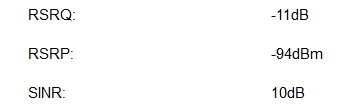

{kind=link}
{kind=link}
{kind=link}
{kind=link}
Ist eh Weihnachten.

Da darf man sich ja was wünschen.

T - Mobile stellt bei mir lt. Karte LTE-Advanced 250 MB zu Verfügung. Habe einen 70/14 Vertrag.
Breitbandabdeckung fast jeden Abend und am Wochenende sind eine Katastrophe.
Siehe Test von Vorhin.
Sieht sehr nach einer überlasteten Zelle aus.
Wie sieht es zu anderen Uhrzeiten aus?
Up-/Download Verhältnis sieht schon nach Überlastung bzw. nach Bandbreitenoptimierung
aber die sollte sich nicht auf den Ping auswirken und der ist schon auch sehr hoch!
Ist der Ping denn bei "gutem" Download auch so hoch oder besser?
Was auch noch eine Option ist, den Router wo anders zu testen. Zu einem, wo anders im Haus und dann aber auch in einem anderen Ort bzw einige Kilometer vom jetzigen Standort entfernt.
Unter Tags kommt schon mal 25 - 30 Mbit/s im DL herein, UP ist immer bei 13 - 14 Mbit/s. Ping ist auch besser. Habe nochmals ein Bildchen gemacht.
Ping ist zwar hoch aber noch akzeptabel.
Der DL tagsüber sind besser, der UL im ganz oberen Bereich.
Ja sieht nach klassischer Überlastung aus. Ein Problem beim Modem würde ich ausschließen.
Immer wichtig zu wissen - wie sieht der Pegel vom Signal aus?
Habe fast Sichtkontakt, zum Masten. Router steht erhöht am Fensterbrett.
-90 dBm bis -100 dBm Mittelmäßiger Pegel Internet und Telefonie mit größeren Störungen

Tja ich frag mich da auch schon seit Wochen, wie TM das beste Netz haben kann!
Also ich kann das hier nicht sagen. Jeden Tag am Abend hab ich von meiner 50/10 Leitung wenns super läuft 10/8.
Jetzt zb. sind 6/8. Das wird bis zum Primetime dann aber noch schlechter und geht's meistens auf 2/8 zurück.
Da kannst alles vergessen!
Klar gibts dann wieder Tage wo es mit 25/10 läuft. Aber die sind selten geworden.
Untertags gehts ja, aber am Abend ist es extrem schlecht.
Wenn unser Sohn seine Online Games anwirft kannst dann Netflix und so vergessen!
@41Kurt21
Bist du dir sicher, dass es sich dabei um einen TMobile Masten handelt.
Die Werte sind zwar OK aber wenn der Masten in der Nähe ist, müsste mehr drinnen sein.
Wobei das alles nicht hilft, wenn die Zelle überlastet ist.
Auf jedem Mast sollte die Telefonnummer vom Anbieter oben
Ja es wäre gut, wenn da mehr Transparenz sein könnte.
Da gibts Potential nach oben.
Ja, idealerweise eine Karte mit Auslastung, Sektoren und Anbindung.
Ist eh Weihnachten.

Da darf man sich ja was wünschen.

Gestern wars ja wieder mal erträglich!
Von 50/10 sind gerade mal 1/9 durch gekommen

Läuft, würd ich sagen!
Momentan schwanke ich zwischen 2 und 7 im Donwload. Das ist ja für 20:15 Uhr eh schon ein Hit!
@homats welche Router verwendet du und welche Antenne (bzw ist eine Antenne im Einsatz)?
Bitte teste mal ohne Antenne?
Wie verhält sich der Router draußen im freien?
Alle möglichen Standorte vom Router durch probiert?
Hi,
ich verwende euren Huawei Router B315s-22, den Würfel und ein Netgear LTE Modem (wegen dem benötigten Bridge Mode)
Ob drinnen oder draußen, mit allen Geräten das selben. Nachbar hat auch TM, und auch den Würfel und hat das gleiche, obwohl er sogar Freie Sicht auf den Sender hat.
Der Sender ist halt überlastet! Das liegt nicht am Router, oder sonst was.
Habe heute um halb 7 schon nur mehr 1/6 gehabt! Jetzt läufts ja aktuell wieder mit 8/8, aber um 20 Uhr ist es dann wieder vorbei mit der Gaudi!
Hotline reichste ja sowieso nicht. Aber les dir das Forum durch, alle jammern das LTE nur mehr langsam ist.
Wie sind die Empfangswerte?
Ein bisschen schmunzeln musste ich schon, als ich die Email mit der frohen Botschaf, dass T-Mobile Testsieger wurde, gelesen habe.
Ich kann mich hier allen anschließen, mein LTE Extreme mit 150 Mbit lässt maximal bei Schönwetter und wenn alle ausnahmsweise nicht surfen 30 Mbit zu.
Nach zahlreichen Anrufen und teilweise richtig sinnlosen Vorschlägen ("Probieren sie doch bitte einen SIM -Tausch aus, eventuell liegt ein Verschleiß vor") hatte ich einen Techniker am Apparat der mir den Einsatz einer externen Antenne zu Herzen legte. Mein LTE Router B315s-22 steht auf der Fensterbank und sieht den nächsten Masten, der Luftlinie ca. 600 m entfernt ist, förmlich ohne Unterbrechung. Zumindest wurde das Thema Kulanz seitens T-Mobile angesprochen, falls der Einsatz einer externen Antenne nicht helfen sollte.
Es mag ja schon sein, dass die angegebenen bzw. verkauften Geschwindigkeiten nicht eingehalten werden, eine maximale Performance von 20 - 30% ist aber dann doch frech!
Ich will T-Mobile hier auch nicht schlecht reden, meines Erachtens ist man auf den Ansturm der LTE Technologie noch nicht gerüstet gewesen und hängt jetzt offensichtlich nach.
Punkto Netztest, es ist cool das es sie, als Feedback für die Provider, gibt. Jedoch sehe ich die Aussagekraft für den Konsumenten eher gering. Es ist entscheidend, wie die Test gewisse Bereiche bewerten und es handelt sich nur um eine Momentaufnahme des Testgebiet.
Ich sehe das so, je nach Anwendungsfall gibt es das eine oder andere Netz, was dafür geeignet wird. Für mich war das als daily driver das TMobile Netz, jedoch gibt es Situationen wo ich auch andere Netze nutze. (Z.B. 901-40)
Ja da möchte ich mich anschließen.
Es wird nie jemand behaupten, dass es das perfekt Netz gibt aber TMobile oder auch die Mitbewerber haben gute und leistungsfähige Abdeckungen.
Man muss aber klar sagen, dass es Regionen gibt, wo tatsächlich noch Nachholbedarf ist und da verstehe ich alle, die hier ihren Unmut loswerden.
An dieser Stelle können wir nur helfen, die Lage in irgendeiner Form zu verbessern und es hat ja tatsächlich auch schon positives Feedback gegeben - sei es durch einen Standortwechsel des Modems in den eigenen Räumen oder durch die Verwendung einer Richtantenne.
0,26!! mehr sag ich da nimma dazu!
Und bitte kommt nicht so Sachen wie, Außenantenne, andere Modemposition!
Das bringt alles nicht. Gleiche Stelle, gleiches Moden und in der Früh läuft es!! Nur Untertags wird es immer schlechter, bis am Abend halt gar nichts mehr geht.
Obwohl man sieht, das am zweiten Test vom 19.12 das Handy sogar auf 3G zurück gefallen ist!
Und ja, ich bin Langzeitkunde und leider hab ich noch Bindung da ich letztes Jahr erst verlängert hab -> Fehler wie sich nun raus stellt.
Was sagt die Hotline zu dem Problem?
Vielleicht finden die eine Lösung.
Hotline gestern am Abend und heute Mittag schon angerufen mit dem Ergebnis, da kann man halt nix machen. Der Sender is voll!
Da bringt es nix auf ein anderes Modem umzusteigen, den API zu ändern, auf 3G umzustellen. Es ist halt so!!!!
Es ist auch kein Update am Sender geplant das sich was Verbessern würden.
Ausweg: Kündigen!
Ja mit den Werten ist wirklich nichts anzufangen, schade!
Hat T-Mobile ein Sonderkündigungsrecht angeboten? Sonst eventuell mal nachfragen..
Die Werte sind definitiv eine Katastrophe!!!

TMobile liest ja hier auch mit - dieser Sendebereich sollte dringend betrachtet werden.
Da geht offenbar nichts mehr.
Am 03/01/2019 um 16:42 schrieb 5igi3lue:
Hat T-Mobile ein Sonderkündigungsrecht angeboten?
Das hoffe ich doch - bei diesen Werten

T - Mobile stellt bei mir lt. Karte LTE-Advanced 250 MB zu Verfügung. Habe einen 70/14 Vertrag.
Breitbandabdeckung fast jeden Abend und am Wochenende sind eine Katastrophe.
Siehe Test von Vorhin.
Am 4.1.2019 um 07:40 schrieb Christian_E:TMobile liest ja hier auch mit - dieser Sendebereich sollte dringend betrachtet werden.
Vielleicht, aber sie machen nichts.
Wie lange kann es dauern einen Sender zu reparieren?
Stunden, Tage, bei uns eher Wochen oder Monate.
Und sollte TM wirklich mitlesen -> und aktuell wieder Total Ausfall
Ja das ist ärgerlich - verstehe ich.
Liebe Tmobile - könnt ihr das bitte mal prüfen? Danke!
vor 13 Stunden schrieb homats:
Vielleicht, aber sie machen nichts.
Wie lange kann es dauern einen Sender zu reparieren?
Stunden, Tage, bei uns eher Wochen oder Monate.
Und sollte TM wirklich mitlesen -> und aktuell wieder Total Ausfall
@homats Hast du dazu schon einmal den direkten Kontakt zu den Technikern gesucht? Über das Forum können wir deine Werte mit deinem Standort nicht gegensetzten. Du erreichst die HomeNet Hotline unter 0676 2000 > Taste 3.
LG, Käthe
vor 9 Stunden schrieb Käthe:
@homats Hast du dazu schon einmal den direkten Kontakt zu den Technikern gesucht? Über das Forum können wir deine Werte mit deinem Standort nicht gegensetzten. Du erreichst die HomeNet Hotline unter 0676 2000 > Taste 3.
LG, Käthe
ja klar.
Entweder Seder voll, oder Probleme mit Richtfunk. in den nächsten Monaten ist ein Ausbau am Sender geplant, wir arbeiten mit Hochdruck dran...
Aktuell wieder kein Netz! Zumindest hatten wir von 10 - 17 Uhr Netz, ist ja eh schon Top Leistung!
Hoffen wir mal, dass es besser wird.
Deinen Ärger verstehe ich voll und ganz.
Ich hatte mittlerweile schon mehrere Gespräche mit den Technikern und mittlerweile alles probiert was mir empfohlen wurde. Modem ist mittlerweile mit Antenne an der Hausmauer verbunden, trotzdem keine Besserung. Hab mich nun dazu entschlossen die besprochene Kulanz aan und heute angerufen. ABER es wird momentan eine Tarifanpassung durchgeführt und ich soll mich bitte nächste Woche wieder melden. Habe zusätzlich noch einen Adress Check gemacht und auf einmal wird für meinen Standort nicht mehr die 300er Leitung empfohlen, sondern die mit 70 MBit.

Zumindest hat man mit der Abstufung schon reagiert in deinem Bereich aber das hilft dir natürlich jetzt auch nicht mehr weiter.
Mal schauen, was da noch rauskommt bei dir?
Eine Frage - was hast du denn für eine Außenantenne im Einsatz?
LG
Christian
Hallo homats , bei mir schauts gleich aus. Ich hab jetzt den 60/10er Tarif von Drei genommen. Kostet nur 20,- statt 37,-/pro Monat, und liefert ca 10fache Datengeschwindigkeiten. Ich teste immer 3-5 mal und nehme den Durchschnitt.
Die Mobilfunknetze und der Markt sind dynamisch. Vielleicht sieht die Sache in 2 Jahren wieder anders aus.
{kind=link}
{kind=link}
{kind=link}
{kind=link}